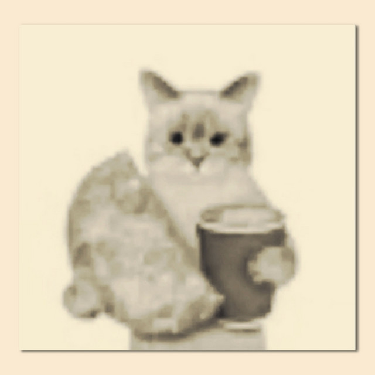

Warm Regards!

Hi. It's currently 10 PM on a Sunday night and I'm currently almost half asleep while typing this. So there is not going to be much visual pizzazz to my website, at least for now - I hope this will suffice, though!
Howdy, creature on planet Earth. My name is Josh but you can call me Onyx online (if you want). I'm just a guy on the internet. My friends and I would describe myself as laidback, artsy, innovative, wise, and charistmatic. I've had my ups and downs over the years, but I think I'm starting to find myself. This website only paves the way for that opportunity, and I'm very happy to have you here.
This website also just isn't for introducing myself - I'm thinking of running a blog soon! I have plenty to share about myself! So if you, my friend, would like to learn more about me, you shall scroll down! :}
If you're confused about anything listed, you can hover over its text to show additional information.
You can also do this for certain other things on the website!
Here are a few of my current interests. I won't give you every little detail, and you can ask me more about them if you want:
I'm very interested in drawing, or just making art in general. It's a way for me to express my creative crevices and show the world, well - me. I'm currently still learning how to draw and some of the fundamentals, and I don't really make art that often (see details later onto why that is). I've always been fascinated with the various mediums us humans can express ourselves with and I think it's so beautiful that we have all the freedom with what we are capable of creating.
Writing is another one of my major hobbies. You might've been able to tell that it was from the way I articulate my thoughts. I've always been very interested in writing and philisophical thingamajigs. I've been thinking of getting into reading books again, but I'm not quite sure yet. It's another thing I'm trying to get better at - it might just be my subconscious, but reading things I have previously wrote make me gawk in utter horror.
If you're friends with me, it's probably not a surprise to you that I like music. I personally think it would be impossible to live without music. And have you thought about how music is important to us? It has singlehandedly affected cultures and our ways of life. Anyways, random philosophy aside - I like listening to many genres of music, notably genres pertaining to jazz, indie, rock (depends), electronic/hardcore, R&B... If you want to know more, you can go to my neat little LastFM ↗ page. My favorite artists would probably have to be Machine Girl, Louis Cole, KevinKempt, Catpack, and Daniel Caverly. I like listening to music from smaller artists, or I might just have a bias against bigger creators. I'm not sure. Anyways, I'm also getting into creating music! On my birthday, I got myself a pretty darn nice piano and it lives in my bedroom. I'm currently learning how to play it, so that's pretty cool. I'm also partially studying music theory (although I won't fully get into it until I'm ready).
Another one you could probably guess by looking at this website - my website! Yup, no surprise that I also like to program and that I'm relatively tech savvy. I think that stuff is all pretty cool, and I might major in computer science/engineering or something else programming related when I get to college. I still have time to think about it, though. I like to make small projects, and I don't take commissions for anything yet. I've learned programming languages such as Python, JavaScript, Luau, HTML/CSS (duh), and some C/Java. My memory might be a bit hazy sometimes, though... so take that list with a reasonably portioned grain of salt. And, no! I don't own those elusive 'programming' socks. Sorry.
I can't think right now, so I can't think of any other hobbies I pursue. Just pretend that there are other things other than these listed. Capiche?
These are just thoughts/interests I wanted to share had while creating the website at this time, but have not conceptualized yet fully:
I don't want to make this section too long, but I still felt like I should add it. I've been going through some mental hurdles recently, and it's just been kind of hard for me. Please be patient with me. If I don't respond to you for a while, it might be because I'm overwhelmed. If that happens, maybe try pinging me on Discord. That aside, it's been hard to enjoy hobbies or life at its fullest, as I struggle with depression and focus issues, particularly motivation and quick burnout. I have been struggling with MDD (major depressive disorder) for a while and I'm working on getting diagnosed for ADHD/other disorders (i.e. OCD) in February. I currently take antidepressants, and it's just going to take me a while to feel better. Even though living honestly seems like a burden right now, and even though I feel broken and dead inside at some points, I've been slowly realizing over time what makes me happy in life and the things that matter to me. So, don't worry. I'm not going anywhere. :)
You don't need to read this if you already know your boundaries. I'm usually chill about most people. Just don't be weird. Do not interact with me under any circumstances if you identity as a neo-nazi, zoophile, necrophile, or a pedophile - or have streneous political views that would not be considered kosher or viewed as standoffish; the list can go on. Just have some common sense. People under 13 are also not welcome as friends. I don't care if your profile picture or bio has some sensitive stuff in it as long is it is mostly safe for work. Just don't send me porn or stupid stuff unless I have said that it is okay. Also go away if you dickride AI kthx.
Yes. I am a minor. Please don't be overtly weird with me if you're an adult, even though I'm turning 18 in a few years. You can still be friends with me if you respect these rules. And if anything I say or do makes you uncomfortable, please let me know. I want to be respectful to everyone I talk to and respect their boundaries. Even though it rarely happens, there have been some points of time where my impulses have taken control of me. Thank you for taking your time to read this. ❤️